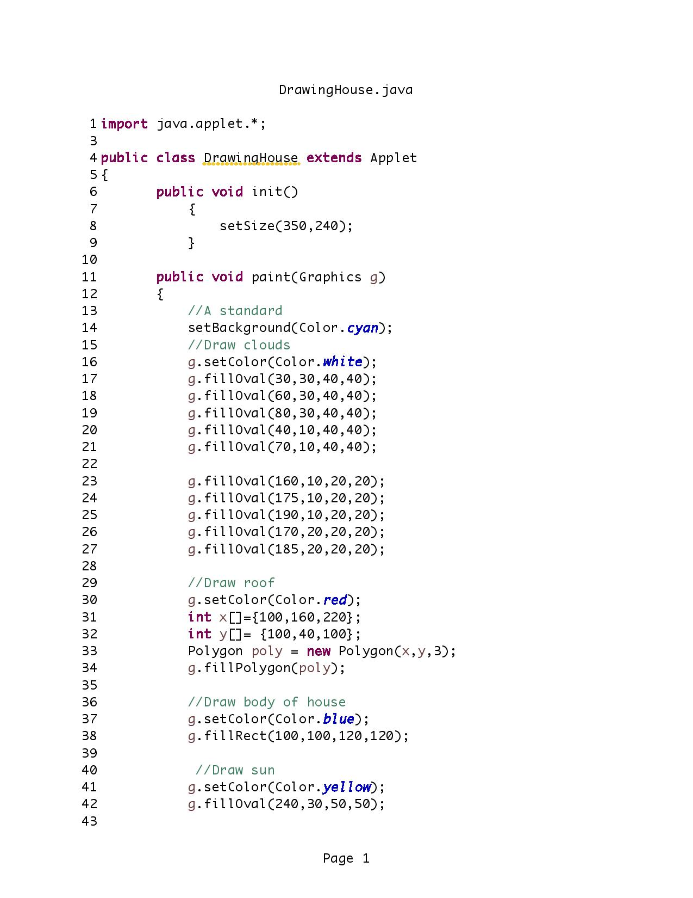
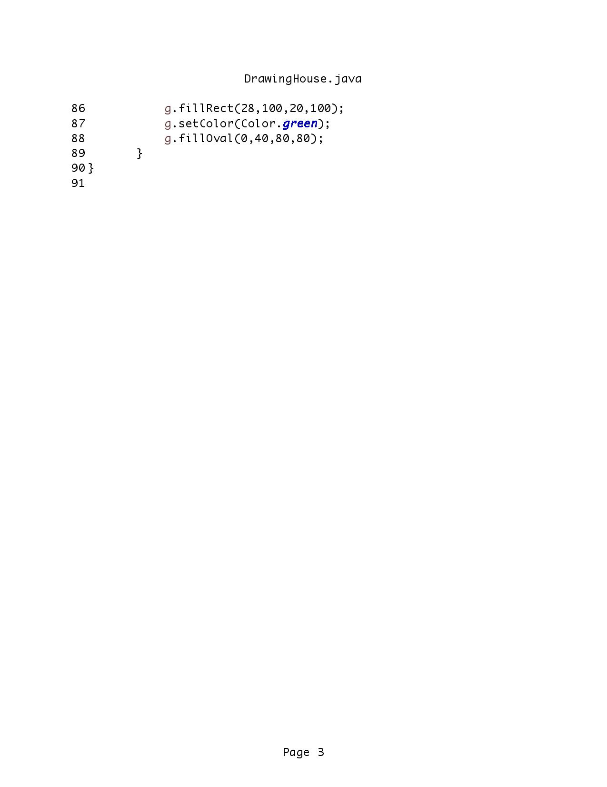

Growing up, society was not very computer-dependent as it is today. We
went to the library when we had to do research for a school project or
paper. If I remember correclty, my family's first computer was an IBM 5155 portable personal
computer which had to boot from a floppy drive and ran DOS.
IBM 5155 Portable Personal Computer
Seagate Crystal
My first coding expeirence was at work while using a program (Seagate
Crystal) to generate reports. This program pulls data from a
database and analyzes it according to how the user writes the report.
It can be written to simply return raw data or show visual
representations such as graphs. It can also be programmed to perform
mathematical calculations to find sub-totals, totals, and percentages
(just to name a few). At work, these reports are referred to as
"Crystal Reports" or "Crystals" for short. It is amazing on how the
final product can look so simple, yet no one is aware of the
complicated formulas written in order to get those results. Aside from
familiar text boxes, the majority of all data shown on the report has
some sort of formula or code behind it. I self-taught myself by
playing and tweaking with reports given to me, then writing my own
from scratch. I developed this skill exponentially and am now able to
write extremely complicated reports. (Due to sensitive content, I am
unable to show pictures of reports that I have made.)
Java
It was because of my brief exposure to coding through "Crystal Reports"
that I became very interested in actual computer programming and coding.
My first official exposure to legitimate coding was at IIT: ITM 311
Introduction to Software Development. This course taught me the basics
of using Java which progressed into more complicated coding. Although
this class was completely foreign and at times very complex, I truly
enjoyed learning how to code. Shown below are 2 assignments, the first
was a simpler one where prompts asked for user input and then
calculations are done. The second is a "drawing" of a house done
completely with coding. It was both a challenging and fulfilling course
which reinforced my fondness for programming.
Page 1 of 3 for program source code "average"
Page 2 of 3 for program source code "average"
Page 3 of 3 for program source code "average"
Picture of output for source code "average"

Page 1 of 3 for program source code "DrawingHouse"
Page 2 of 3 for program source code "DrawingHouse"

Page 3 of 3 for program source code "DrawingHouse"
Picture of output for source code "DrawingHouse"
Web Design
I can say with confidence that my first "web design" experience was when
MySpace first came around. I remember
looking up different configurations in order to get different fonts,
colors, styles, etc. This course (ITMD 361) is my first real introduction
to real web-design. I look forward to learning and mastering the aspects
of making a real, professional website.